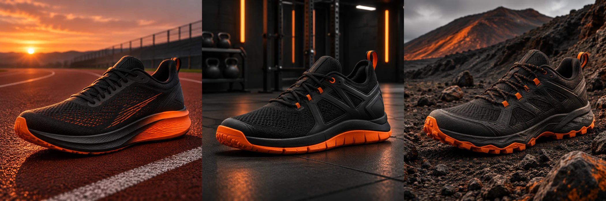
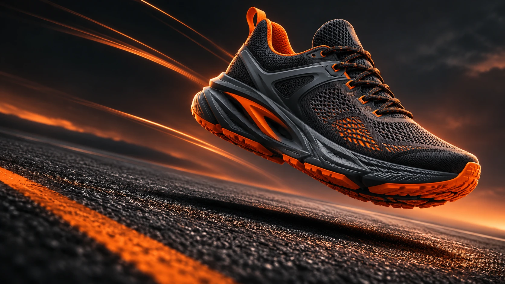

01 / THE ROAD
RUN.
Fast mornings. Open roads. Find a rhythm for the next mile.

MOTION SERIES / 001
Designed around the rhythm of motion, from early runs to everyday miles.
Explore the collection
Fast mornings. Open roads. Find a rhythm for the next mile.
Build momentum, one session at a time.
Leave the expected route behind. Make the route your own.
THE DESIGN LANGUAGE
From the rhythm of an early-morning run to the uneven path beyond the city, STRIDE brings a single visual language to different ways of moving.